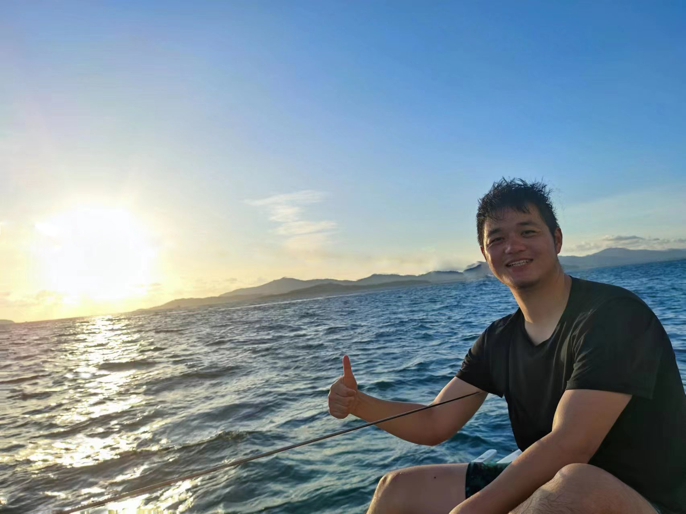
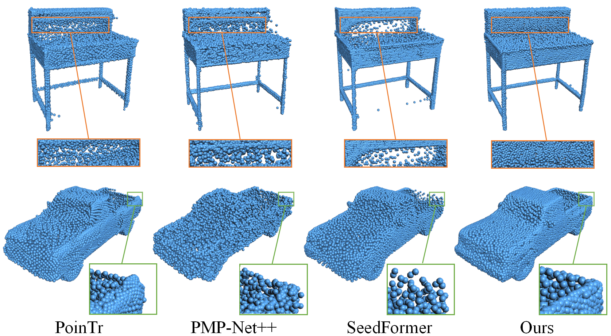

Honghua ChenResearch Fellow
School of Computer Science and Engineering |
 |


Biography
I am currently a Research Fellow at the MMLab@NTU, S-Lab, and working with Prof. Xingang Pan and Prof. Chen Change Loy, with the School of Computer Science and Engineering, Nanyang Technological University (NTU), Singapore.
Before joining NTU, I obtained the PhD degree in 2022 from NUAA and was supervised by Prof. Jun Wang. Meanwhile, I worked closely with Prof. Mingqiang Wei.
From 2020 to 2022, I was a Research Assistant at The Chinese University of Hong Kong (CUHK) and
Hong Kong Center for Logistics Robotics.
My research interests include 3D vision, 3D measurement and learning-based point cloud processing.
News
- [02/2024] One paper about NeRF inpainting was accepted to CVPR 2024!
- [09/2023] Our survey paper about mesh denoising was accepted to ACM TOMM! Please kindly use the released benchmark!
- [07/2023] One paper about point cloud completion (when working at NUAA) was accepted to ICCV 2023!
- [04/2023] Our paper "Scene Flow Estimation on Point Clouds: A Survey and Prospective Trends " was accepted to Computer Graphics Forum!
- [03/2023] Our code and data for RePCD-Net: Feature-aware Recurrent Point Cloud Denoising Network (IJCV 2022) released!
- [03/2023] Our code for CSDN: Cross-modal Shape-transfer Dual-refinement Network for Point Cloud Completion (IEEE TVCG 2023) released!
- [03/2023] will be updated from now.
Selected Publications [Google Scholar]
| MvDrag3D: Drag-based Creative 3D Editing via Multi-view Generation-Reconstruction Priors Honghua Chen, Yushi Lan, Yongwei Chen, Yifan Zhou, and Xingang Pan. [code] [Project Page] https://chenhonghua.github.io/MyProjects/MvDrag3D/ |
|

|
MVIP-NeRF: Multi-view 3D Inpainting on NeRF Scenes via Diffusion Prior Honghua Chen, Chen Change Loy, and Xingang Pan. CVPR 2024. [code] |

|
Geometric and Learning-based Mesh Denoising: A Comprehensive Survey Honghua Chen, Zhiqi Li, Mingqiang Wei, and Jun Wang. ACM Transactions on Multimedia Computing Communications and Applications. [data] |
|  | SVDFormer: Complementing Point Cloud via Self-view Augmentation and Self-structure Dual-generator Zhe Zhu, Honghua Chen, Xing He, Weiming Wang, Jing Qin, Mingqiang Wei. ICCV 2023. [code] |
Honors & Awards
| 中国发明协会发明创新奖一等奖, 2022 |
| National Scholarship in China (the highest scholarship for students in China), 2021 |
| Best Paper Oral Presentation Award, CIDE&DEA, 2020 |
| Stars Innovation Nomination Award, NUAA, 2020 |
| Suzhou Industrial Park Scholarship, NUAA, 2019 |
Professional Service
| CVPR, ECCV, ICCV, SIGGRAPH, IEEE TPAMI/TVCG/TASE/TMM/TNNLS, CAD, Pattern Recognition, The Visual Computer, Computer & Graphics, Measurement, CAD/CG 2020 |

© Honghua Chen